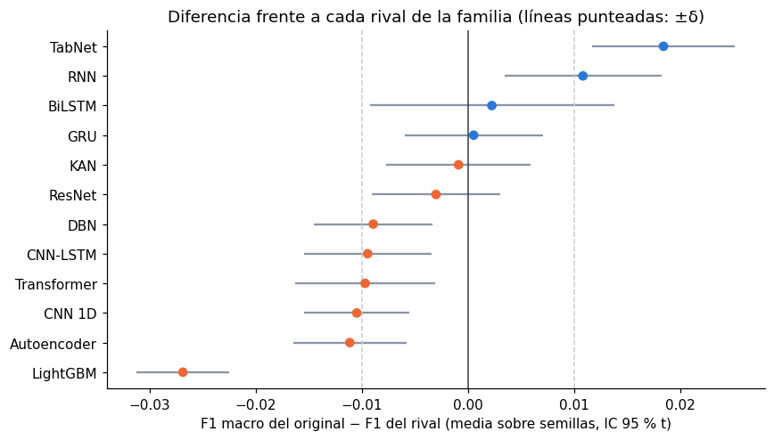
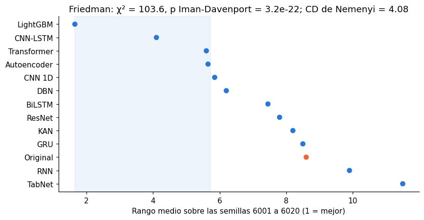

Validación: protocolo y pruebas de hipótesis#
Protocolo preregistrado#
El protocolo (experiments/protocolo.md) se congeló el 22/11/2026 con la etiqueta de Git e3-protocolo, antes de cualquier corrida definitiva, y la declaración del estándar lleva la etiqueta anterior e3-estandar. Fija las hipótesis, las predicciones secundarias, la métrica primaria y δ, la fuente del mecanismo, los tres conjuntos adicionales, las particiones, las semillas, el determinismo, la familia de contrastes, las pruebas, la corrección de Holm, el presupuesto de ajuste, el análisis de potencia y Nd. Las desviaciones posteriores al congelamiento se declaran, con su justificación, en la última sección de este capítulo.
Equidad del presupuesto. El modelo original recibió las mismas 12 configuraciones de (lr, weight_decay, lote) que los 13 modelos profundos del E2, el mismo máximo de 30 épocas, la misma parada temprana sobre el F1 macro de validación con paciencia 6, la misma pérdida ponderada y el mismo recorte del gradiente, con el motor de entrenamiento del E2 (capítulo 6). El presupuesto se midió en número de configuraciones.
Análisis de potencia#
Potencia conjunta observada (producto de las potencias por contraste): 0.115
| rival | sigma_d | R_necesarias | semillas usadas | potencia observada para δ | MDE observada | |
|---|---|---|---|---|---|---|
| 0 | CNN-LSTM | 0.0167 | 48 | 48 | 0.9080 | 0.0085 |
| 1 | Autoencoder | 0.0052 | 10 | 20 | 0.9590 | 0.0076 |
| 2 | RNN | 0.0096 | 16 | 20 | 0.7639 | 0.0105 |
| 3 | Transformer | 0.0095 | 16 | 20 | 0.8552 | 0.0093 |
| 4 | BiLSTM | 0.0103 | 19 | 20 | 0.4075 | 0.0162 |
| 5 | ResNet | 0.0059 | 10 | 20 | 0.9075 | 0.0085 |
| 6 | GRU | 0.0100 | 18 | 20 | 0.8621 | 0.0092 |
| 7 | KAN | 0.0061 | 10 | 20 | 0.8311 | 0.0096 |
| 8 | TabNet | 0.0148 | 38 | 38 | 0.8315 | 0.0096 |
| 9 | DBN | 0.0063 | 10 | 20 | 0.9418 | 0.0079 |
| 10 | LightGBM | 0.0052 | 10 | 20 | 0.9952 | 0.0062 |
| 11 | CNN 1D | 0.0081 | 12 | 20 | 0.9805 | 0.0070 |
El piloto pidió 48 semillas para el contraste con CNN-LSTM y 38 para TabNet, y con ellas se planearon todos los contrastes para una potencia de 0,90. La potencia observada, calculada con la dispersión real de las diferencias, alcanza 0,90 en 6 de los 12 contrastes (CNN-LSTM, Autoencoder, ResNet, DBN, LightGBM y CNN 1D) y se queda entre 0,76 y 0,86 en otros cinco. BiLSTM es el caso extremo, con 0,41 y una diferencia mínima detectable de 0,016. La potencia conjunta es de apenas el 11,5 %.
Esto significa que el piloto de 5 semillas subestimó la dispersión de las diferencias en la mitad de los contrastes, algo previsible con tan pocas semillas, y que, aun si el modelo original fuera mejor que todos los rivales por exactamente δ, la probabilidad de rechazar los 12 contrastes a la vez sería baja. Es la consecuencia esperada de una prueba de unión-intersección con m = 12 (sección 8.5 del enunciado).
Por lo anterior, cada contraste se reporta con su diferencia mínima detectable, la potencia insuficiente se declara como limitación y se distingue entre «no concluyente» y «equivalente»; un resultado no concluyente no se interpreta como equivalencia.
Resultados confirmatorios#
| rival | n_semillas | F1 original | F1 rival | diferencia | IC95 t | p T1 t Holm | p T2 Wilcoxon Holm | p T3 bootstrap bloques Holm | delta Cliff | P(original>rival) bayes | P(ROPE) | decisión | |
|---|---|---|---|---|---|---|---|---|---|---|---|---|---|
| 0 | CNN-LSTM | 48 | 0.8496 | 0.8591 | -0.0095 | (np.float64(-0.015451377299035613), np.float64... | 2.1031e-02 | 2.1906e-02 | 1.0000 | -0.3889 | 0.0001 | 0.0585 | Peor según T1 y T2; T3 no concluyente |
| 1 | Autoencoder | 20 | 0.8479 | 0.8591 | -0.0111 | (np.float64(-0.01650398604504042), np.float64(... | 3.1078e-03 | 2.6131e-03 | 0.6107 | -0.6000 | 0.0000 | 0.4845 | Peor según T1 y T2; T3 no concluyente |
| 2 | RNN | 20 | 0.8479 | 0.8371 | 0.0108 | (np.float64(0.003424123380895726), np.float64(... | 3.6407e-02 | 6.0396e-02 | 1.0000 | 0.5050 | 0.8021 | 0.1979 | No concluyente |
| 3 | Transformer | 20 | 0.8479 | 0.8576 | -0.0097 | (np.float64(-0.016272111750580846), np.float64... | 3.6407e-02 | 5.6614e-02 | 0.6467 | -0.5450 | 0.0000 | 0.3033 | No concluyente |
| 4 | BiLSTM | 20 | 0.8479 | 0.8457 | 0.0022 | (np.float64(-0.009268893466863963), np.float64... | 1.0000e+00 | 1.0000e+00 | 1.0000 | -0.0750 | 0.1774 | 0.6956 | No concluyente |
| 5 | ResNet | 20 | 0.8479 | 0.8510 | -0.0030 | (np.float64(-0.009057085947851066), np.float64... | 1.0000e+00 | 1.0000e+00 | 0.9299 | -0.1300 | 0.0000 | 0.9887 | No concluyente |
| 6 | GRU | 20 | 0.8479 | 0.8474 | 0.0005 | (np.float64(-0.005973955824007528), np.float64... | 1.0000e+00 | 1.0000e+00 | 1.0000 | -0.0400 | 0.0026 | 0.9964 | No concluyente |
| 7 | KAN | 20 | 0.8479 | 0.8488 | -0.0009 | (np.float64(-0.007693136887489694), np.float64... | 1.0000e+00 | 1.0000e+00 | 1.0000 | -0.1000 | 0.0027 | 0.9901 | No concluyente |
| 8 | TabNet | 38 | 0.8485 | 0.8301 | 0.0184 | (np.float64(0.011673641533960626), np.float64(... | 3.0216e-05 | 2.5292e-05 | 1.0000 | 0.5429 | 0.9938 | 0.0063 | Mejor según T1 y T2; T3 no concluyente |
| 9 | DBN | 20 | 0.8479 | 0.8569 | -0.0089 | (np.float64(-0.014552719356344772), np.float64... | 2.4833e-02 | 4.4727e-02 | 1.0000 | -0.6000 | 0.0000 | 0.6943 | Peor según T1 y T2; T3 no concluyente |
| 10 | LightGBM | 20 | 0.8479 | 0.8748 | -0.0269 | (np.float64(-0.031238640951983386), np.float64... | 9.0179e-10 | 2.2888e-05 | 1.0000 | -1.0000 | 0.0000 | 0.0000 | Peor según T1 y T2; T3 no concluyente |
| 11 | CNN 1D | 20 | 0.8479 | 0.8584 | -0.0105 | (np.float64(-0.01541392244025977), np.float64(... | 2.7281e-03 | 3.5534e-03 | 1.0000 | -0.6950 | 0.0000 | 0.4747 | Peor según T1 y T2; T3 no concluyente |

El modelo original obtiene un F1 macro medio de 0,850 en la prueba sellada (48 semillas) y no supera con significancia a ninguno de los 12 rivales: la condición R3 no se cumple. Contraste por contraste:
Es mejor que TabNet (+0,018) según la t pareada y Wilcoxon, y que RNN (+0,011) solo según la t.
Es peor que LightGBM (−0,027), Autoencoder (−0,011), CNN 1D (−0,010), CNN-LSTM (−0,009) y DBN (−0,009) según esas dos pruebas, y que Transformer (−0,010) solo según la t.
No se distingue de BiLSTM, ResNet, GRU y KAN. Frente a ResNet, GRU y KAN la prueba bayesiana pone más del 98 % de la probabilidad dentro de la región de equivalencia práctica (±δ).
Hay que tener en cuenta que la tercera prueba, el bootstrap por bloques de prueba, no rechaza en ningún contraste de la familia: la prueba sellada tiene solo 23 bloques de 1000 flujos, casi todos de una sola clase, y al remuestrearlos cambia la composición de clases, así que el intervalo de la diferencia es muy ancho (frente a LightGBM va de −0,067 a +0,039). Como la regla preregistrada exige que las tres pruebas rechacen, los contrastes en los que la t y Wilcoxon coinciden quedan como resultados de dos pruebas y no como decisiones confirmatorias. La diferencia con LightGBM es la más grande y la más estable: es negativa en las 20 semillas (δ de Cliff = −1).
Así las cosas, el tope de la calificación es 4,0 (sección 14.1 del enunciado) y el trabajo se sostiene en el hallazgo alternativo preregistrado: el benchmark riguroso, la explicación de por qué el escenario pesa más que la arquitectura y la medición de cuándo ayuda el mecanismo (capítulos 6, 8 y 10).
Procedimiento global y diagrama de diferencia crítica#

La prueba de Friedman rechaza que los 13 modelos sean iguales (χ² = 103,6; p de Iman-Davenport del orden de 10⁻²²; W de Kendall = 0,43). LightGBM tiene el mejor rango medio (1,65), seguido de CNN-LSTM (4,1); el modelo original queda en un rango medio de 8,6, dentro del grupo intermedio.
De esta forma, la conclusión del procedimiento global coincide con la de los contrastes pareados: hay diferencias reales entre modelos, LightGBM está en el primer lugar con una distancia mayor que la diferencia crítica (4,08) frente a la mayoría, y el original no se separa del grupo de redes intermedias.
Por esta razón, el modelo original se presenta como una alternativa con ventajas en robustez (capítulo 8), no como un modelo superior en F1 macro.
Sensibilidad de la conclusión#
| rival | P(original>rival) bayes | P(ROPE) | P(original<rival) bayes | dif exactitud balanceada | p t bacc Holm | p t primeras 20 | |
|---|---|---|---|---|---|---|---|
| 0 | CNN-LSTM | 0.0001 | 0.0585 | 0.9414 | -0.0122 | 2.2429e-03 | 3.7662e-03 |
| 1 | Autoencoder | 0.0000 | 0.4845 | 0.5154 | -0.0115 | 7.5911e-04 | 3.4531e-04 |
| 2 | RNN | 0.8021 | 0.1979 | 0.0000 | 0.0098 | 1.1268e-01 | 6.4454e-03 |
| 3 | Transformer | 0.0000 | 0.3033 | 0.6967 | -0.0126 | 4.1905e-03 | 6.0678e-03 |
| 4 | BiLSTM | 0.1774 | 0.6956 | 0.1269 | -0.0005 | 1.0000e+00 | 6.8761e-01 |
| 5 | ResNet | 0.0000 | 0.9887 | 0.0114 | -0.0026 | 1.0000e+00 | 3.0891e-01 |
| 6 | GRU | 0.0026 | 0.9964 | 0.0010 | -0.0010 | 1.0000e+00 | 8.6547e-01 |
| 7 | KAN | 0.0027 | 0.9901 | 0.0072 | -0.0010 | 1.0000e+00 | 7.8684e-01 |
| 8 | TabNet | 0.9938 | 0.0063 | 0.0000 | 0.0176 | 2.1747e-04 | 1.9377e-04 |
| 9 | DBN | 0.0000 | 0.6943 | 0.3057 | -0.0133 | 6.2877e-04 | 3.5475e-03 |
| 10 | LightGBM | 0.0000 | 0.0000 | 1.0000 | -0.0369 | 2.7755e-12 | 7.5149e-11 |
| 11 | CNN 1D | 0.0000 | 0.4747 | 0.5253 | -0.0136 | 8.3436e-05 | 2.7281e-04 |
La conclusión principal, que R3 no se cumple, se mantiene con las cuatro variantes preregistradas:
la prueba bayesiana de rangos con signo con ROPE ±δ, que da una probabilidad alta de que el original sea peor que LightGBM;
la exactitud balanceada como métrica secundaria;
el subconjunto de las 20 primeras semillas;
la t corregida de Nadeau-Bengio sobre la validación cruzada 5 × 2 (capítulo 8).
Pruebas admisibles del cuadro 4 (sensibilidad)#
| rival | diferencia | p A1 Wilcoxon Holm | p A2 t Nadeau-Bengio Holm | p A3 McNemar Holm | p A4 Friedman post hoc Holm | P(original>rival) bayes | P(original<rival) bayes | DeLong clases a favor | DeLong clases en contra | pruebas a favor del original | pruebas en contra del original | supera (R3 estricto) | |
|---|---|---|---|---|---|---|---|---|---|---|---|---|---|
| 0 | CNN-LSTM | -0.0095 | 2.1906e-02 | 1.0000 | 6.6314e-45 | 2.8402e-03 | 0.0001 | 0.9414 | 0 | 5 | A1, A3, A4, A6 | False | |
| 1 | Autoencoder | -0.0111 | 2.6131e-03 | 1.0000 | 8.9089e-20 | 1.4942e-01 | 0.0000 | 0.5154 | 1 | 4 | A1, A3, A6 | False | |
| 2 | RNN | 0.0108 | 6.0396e-02 | 1.0000 | 9.4302e-01 | 1.0000e+00 | 0.8021 | 0.0000 | 2 | 1 | False | ||
| 3 | Transformer | -0.0097 | 5.6614e-02 | 1.0000 | 6.1528e-44 | 1.4851e-01 | 0.0000 | 0.6967 | 0 | 5 | A3, A6 | False | |
| 4 | BiLSTM | 0.0022 | 1.0000e+00 | 1.0000 | 9.9624e-24 | 1.0000e+00 | 0.1774 | 0.1269 | 0 | 5 | A3, A6 | False | |
| 5 | ResNet | -0.0030 | 1.0000e+00 | 1.0000 | 2.1609e-08 | 1.0000e+00 | 0.0000 | 0.0114 | 1 | 2 | A3 | False | |
| 6 | GRU | 0.0005 | 1.0000e+00 | 1.0000 | 6.5762e-02 | 1.0000e+00 | 0.0026 | 0.0010 | 0 | 4 | A6 | False | |
| 7 | KAN | -0.0009 | 1.0000e+00 | 1.0000 | 1.9928e-01 | 1.0000e+00 | 0.0027 | 0.0072 | 0 | 4 | A6 | False | |
| 8 | TabNet | 0.0184 | 2.5292e-05 | 1.0000 | 1.0854e-01 | 1.4942e-01 | 0.9938 | 0.0000 | 2 | 3 | A1, A5 | A6 | False |
| 9 | DBN | -0.0089 | 4.4727e-02 | 1.0000 | 6.0138e-06 | 3.0792e-01 | 0.0000 | 0.3057 | 0 | 4 | A1, A3, A6 | False | |
| 10 | LightGBM | -0.0269 | 2.2888e-05 | 0.0015 | 1.7868e-36 | 2.0009e-07 | 0.0000 | 1.0000 | 1 | 4 | A1, A2, A3, A4, A5, A6 | False | |
| 11 | CNN 1D | -0.0105 | 3.5534e-03 | 1.0000 | 6.7408e-07 | 1.7885e-01 | 0.0000 | 0.5253 | 1 | 3 | A1, A3, A6 | False |
La fila «F1. Tabular» del cuadro 4 del enunciado admite la t pareada con corrección de Nadeau-Bengio, la F de 5 × 2 cv, Wilcoxon, McNemar y DeLong, Friedman con Holm y la prueba bayesiana con ROPE. Dos de las tres pruebas preregistradas no coinciden al pie de la letra con esa lista: T1 es la t pareada sin la corrección y T3, el bootstrap por bloques, figura en la fila de problemas espaciales. Por eso se repite el análisis con seis pruebas admisibles, con Holm aparte para cada una:
A1. Wilcoxon sobre las semillas.
A2. t con corrección de Nadeau-Bengio sobre las semillas.
A3. McNemar exacta sobre los aciertos del ensamble.
A4. Friedman con post hoc de Holm.
A5. Bayesiana con ROPE, que cuenta como rechazo cuando la probabilidad posterior supera 0,95.
A6. DeLong sobre el AUC uno contra todos de cada clase, que cuenta como rechazo cuando al menos 3 de las 5 clases son significativas en el mismo sentido.
La F de 5 × 2 cv y Nadeau-Bengio sobre 5 × 2 están en el capítulo 8.
Con las pruebas admisibles la conclusión no cambia: el modelo original no supera a ningún rival con tres pruebas, y cinco rivales son mejores que él con tres o más: LightGBM (con las seis), CNN-LSTM (con cuatro), Autoencoder, DBN y CNN 1D (con tres cada uno). Frente a TabNet solo lo favorecen Wilcoxon y la bayesiana, con P(original > TabNet) = 0,994.
Hay que tener en cuenta que McNemar (A3) y DeLong (A6) tratan los 22 883 flujos como si fueran independientes, cuando están agrupados por escenario, de modo que son anticonservadoras. Si se cuentan solo las pruebas sobre semillas (A1, A2, A4 y A5), únicamente LightGBM es mejor con tres o más, con las cuatro. Además, la t con corrección de Nadeau-Bengio infla la varianza con el factor n_prueba/n_entrenamiento = 0,31 aunque el entrenamiento no cambie entre semillas, y solo rechaza frente a LightGBM.
Por tal motivo, se mantiene la decisión preregistrada (R3 no se cumple y el tope es 4,0) y la batería admisible se reporta como sensibilidad. En ninguna combinación de pruebas el original supera a un rival. La superioridad de LightGBM queda respaldada por todas, aunque el capítulo 8 muestra que desaparece en la validación cruzada 5 × 2 y la reporta como resultado no robusto a la partición, como pide la condición 6 de la sección 8.4 del enunciado.
Ajuste y sobreajuste del modelo original#
La prueba de permutación de etiquetas, el optimismo por bootstrap y la curva de aprendizaje se reportan en el capítulo 8 con las corridas de training/ejecutar_robustez.py. Su F1 medio de prueba (0,850) supera ampliamente al clasificador trivial (0,070). La brecha media entre validación (0,919 en el piloto) y prueba es de unos 0,07, del mismo orden que la de las demás redes del E2, porque se debe a la dependencia por escenario documentada en el capítulo 1 y no a un sobreajuste propio del modelo.
Desviaciones del protocolo#
Pruebas del cuadro 4 (23/11/2026, después de ver los resultados). El protocolo citó la fila tabular del cuadro 4 para T1 a T3, pero T3 pertenece a la fila espacial y T1 no lleva la corrección de Nadeau-Bengio. No se reemplazó la decisión preregistrada: se agregó la sensibilidad con las pruebas admisibles de la sección anterior (
experiments/analisis_cuadro4.py). La conclusión es la misma, y el cambio no podía favorecer al original, porque su F1 medio ya es menor que el de 8 de los 12 rivales.GPU en 31 corridas de los conjuntos adicionales (23/11/2026). Las GRU de UNSW-NB15, las BiLSTM y GRU de UNR-IDD y una GRU de UAV-NIDD corrieron en una GPU NVIDIA RTX PRO 6000 Blackwell (porción MIG de 24 GB, PyTorch 2.8.0 y CUDA 12.8), con determinismo estricto de CUDA. Es la opción prevista en la sección 5 del protocolo, solo para BiLSTM y GRU de esos conjuntos. Con la misma semilla, la GRU de UNR-IDD dio un F1 de prueba de 0,722 en CPU y de 0,696 en GPU, una variación del orden de dos desviaciones estándar entre semillas, que se discute en el capítulo 8.
Partición de los conjuntos adicionales (22/11/2026, antes de etiquetar el protocolo y de entrenar cualquier modelo). Los bloques de 1000 filas sin estratificar dejaban clases fuera de la prueba; se cambiaron por bloques de 250 filas estratificados por clase (sección 5.3 del protocolo).